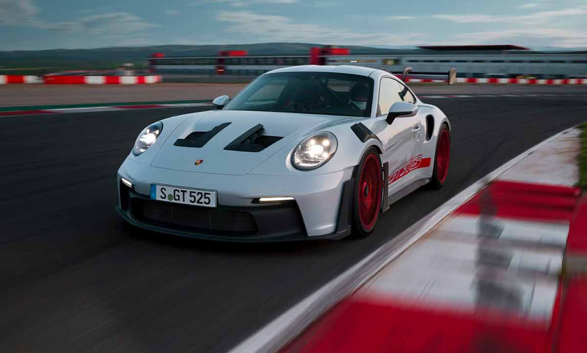
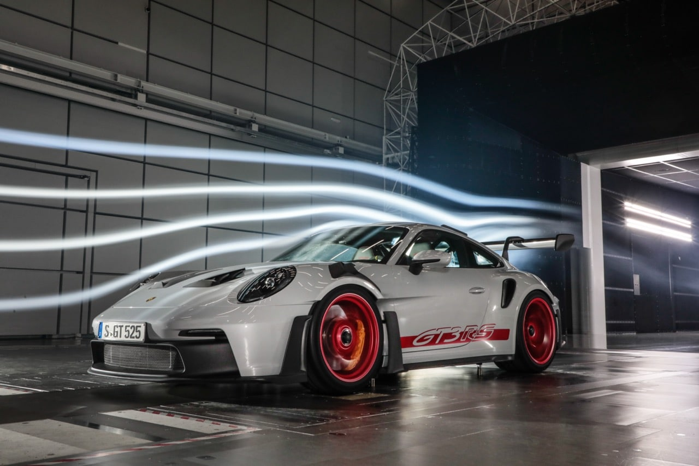

Une bête de piste homologuée route
La 992 GT3 RS repousse toutes les limites de la performance. Avec son moteur atmosphérique 4.0L de 525 chevaux, son aéro active, ses suspensions dérivées de la course, elle incarne l'obsession de Porsche pour l'efficacité.


Aérodynamisme actif & technologies de pointe
Inspirée de la compétition, l’aérodynamique de la GT3 RS est ajustable en temps réel. Le DRS (Drag Reduction System) fait son apparition, permettant d'optimiser les appuis selon les situations. Chaque élément, de l’aileron jusqu’aux ailes ajourées, a été pensé pour maximiser les performances.